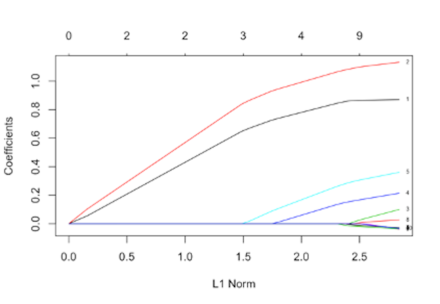

 Figure 160: The path trajectory of a LASSO model
Figure 160 shows the path trajectory generated by applying glmnet() on a dataset with \(10\) predictors. Which two variables are the top two significant variables (note the index of the variables is shown in the right end of the figure)?
Consider the dataset shown in Table 42. Set \(\lambda = 1\) and initial values for \(\beta_1 = 0\), and \(\beta_2 = 1\). Implement the Shooting algorithm by manual operation. Do one iteration. Report \(\beta_1\) and \(\beta_2\).
Table 42: Dataset for Q2
| \(x_1\) | \(x_2\) | \(y\) |
|---|---|---|
| \(-0.15\) | \(-0.48\) | \(0.46\) |
| \(-0.72\) | \(-0.54\) | \(-0.37\) |
| \(1.36\) | \(-0.91\) | \(-0.27\) |
| \(0.61\) | \(1.59\) | \(1.35\) |
| \(-1.11\) | \(0.34\) | \(-0.11\) |
Follow up on the dataset in Q2. Use the R pipeline for LASSO on this data. Compare the result from R and the result by your manual calculation.
Conduct a principal component analysis for the dataset shown in Table 43. Show details of the process.
Table 43: Dataset for Q4
| \(x_1\) | \(x_2\) | \(x_3\) | \(x_4\) |
|---|---|---|---|
| \(1\) | \(1.8\) | \(2.08\) | \(-0.28\) |
| \(2\) | \(3.6\) | \(-0.78\) | \(0.79\) |
| \(1\) | \(2.2\) | \(-0.08\) | \(-0.52\) |
| \(2\) | \(4.3\) | \(0.38\) | \(-0.47\) |
| \(1\) | \(2.1\) | \(0.71\) | \(1.03\) |
| \(2\) | \(3.6\) | \(1.29\) | \(0.67\) |
| \(1\) | \(2.2\) | \(0.57\) | \(0.15\) |
| \(2\) | \(4.0\) | \(1.12\) | \(1.18\) |
Table 44: Dataset for Q4
| \(\text{PC}_1\) | \(\text{PC}_2\) | \(\text{PC}_3\) | \(\text{PC}_4\) |
|---|---|---|---|
Follow up on the dataset in Q2 from Chapter 7. (a) Conduct the PCA analysis on the three predictors to identify the three principal components and their contributions on explaining the variance in data; and (b) use the R pipeline for PCA to do the PCA analysis and compare with your manual calculation.
Suppose that we have an outcome variable that could be augmented into the dataset in Q4, as shown in Table 45. Apply the shooting algorithm for LASSO on this dataset to identify important variables. Use the following initial values for the parameters, \(\lambda=1, \beta_1=0, \beta_2=1, \beta_3=1, \beta_4=1\), and just do one iteration of the shooting algorithm. Show details of manual calculation.
Table 45: Dataset for Q6
| \(x_1\) | \(x_2\) | \(x_3\) | \(x_4\) | \(y\) |
|---|---|---|---|---|
| \(1\) | \(1.8\) | \(2.08\) | \(-0.28\) | \(1.2\) |
| \(2\) | \(3.6\) | \(-0.78\) | \(0.79\) | \(2.1\) |
| \(1\) | \(2.2\) | \(-0.08\) | \(-0.52\) | \(0.8\) |
| \(2\) | \(4.3\) | \(0.38\) | \(-0.47\) | \(1.5\) |
| \(1\) | \(2.1\) | \(0.71\) | \(1.03\) | \(0.8\) |
| \(2\) | \(3.6\) | \(1.29\) | \(0.67\) | \(1.6\) |
| \(1\) | \(2.2\) | \(0.57\) | \(0.15\) | \(1.2\) |
| \(2\) | \(4.0\) | \(1.12\) | \(1.18\) | \(1.6\) |
After extraction of the four PCs from Q4, use lm() in R to build a linear regression model with the outcome variable (as shown in Table 45) and the four PCs as the predictors. (a) Report the summary of your linear regression model with the four PCs; and (b) which PCs significantly affect the outcome variable?
Revisit Q1 in Chapter 3. Derive the shooting algorithm for weighted least squares regression with \(L_1\) norm penalty.
Design a simulated experiment to evaluate the effectiveness of the glmet() in the R package glmnet. (a) For instance, you can simulate \(20\) samples from a linear regression model with \(10\) variables, where only \(2\) out of the \(10\) variables are truly significant, e.g., the true model is
\[
y = \beta_{1}x_1 +\beta_{2}x_2 + \epsilon,
\]
where \(\beta_{1} = 1\), \(\beta_{2} = 1\), and
\[
\epsilon \sim N\left(0, 1\right).
\]
You can simulate \(x_1\) and \(x_2\) using the standard normal distribution \(N\left(0, 1\right)\). For the other \(8\) variables, \(x_3\) to \(x_{10}\), you can simulate each from \(N\left(0, 1\right)\). In data analysis, we will use all \(10\) variables as predictors, since we won’t know the true model. (b) Run lm() on the simulated data and comment on the results. (c) Run glmnet() on the simulated data, and check the path trajectory plot to see if the true significant variables could be detected. (d) Use the cross-validation process integrated into the glmnet package to see if the true significant variables could be detected. (e) Use rpart() to build a decision tree and extract the variable importance score to see if the true significant variables could be detected. (f) Use randomforest() to build a random forest model and extract the variable importance score, to see if the true significant variables could be detected.